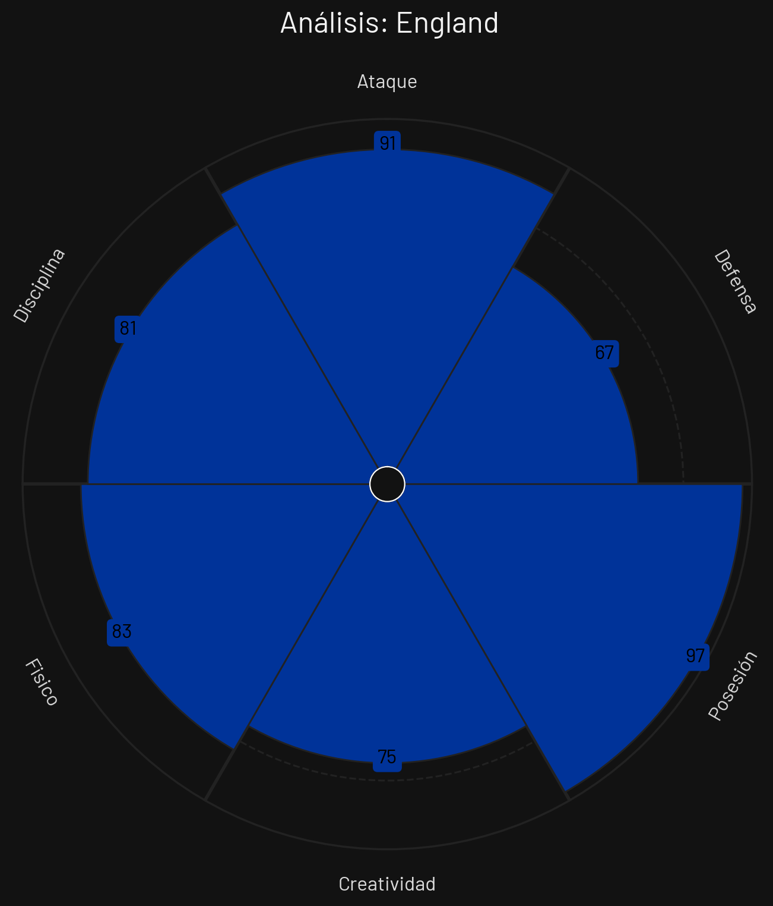
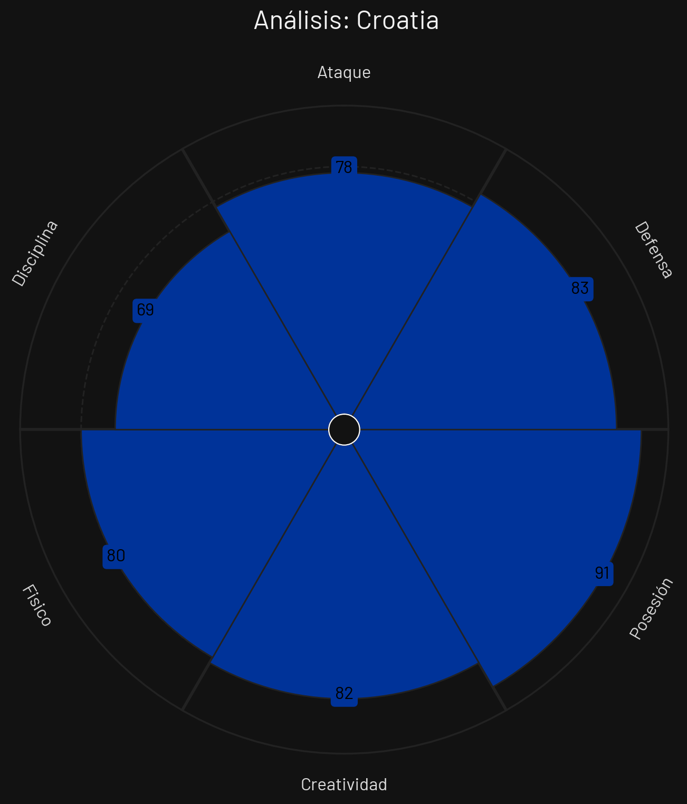
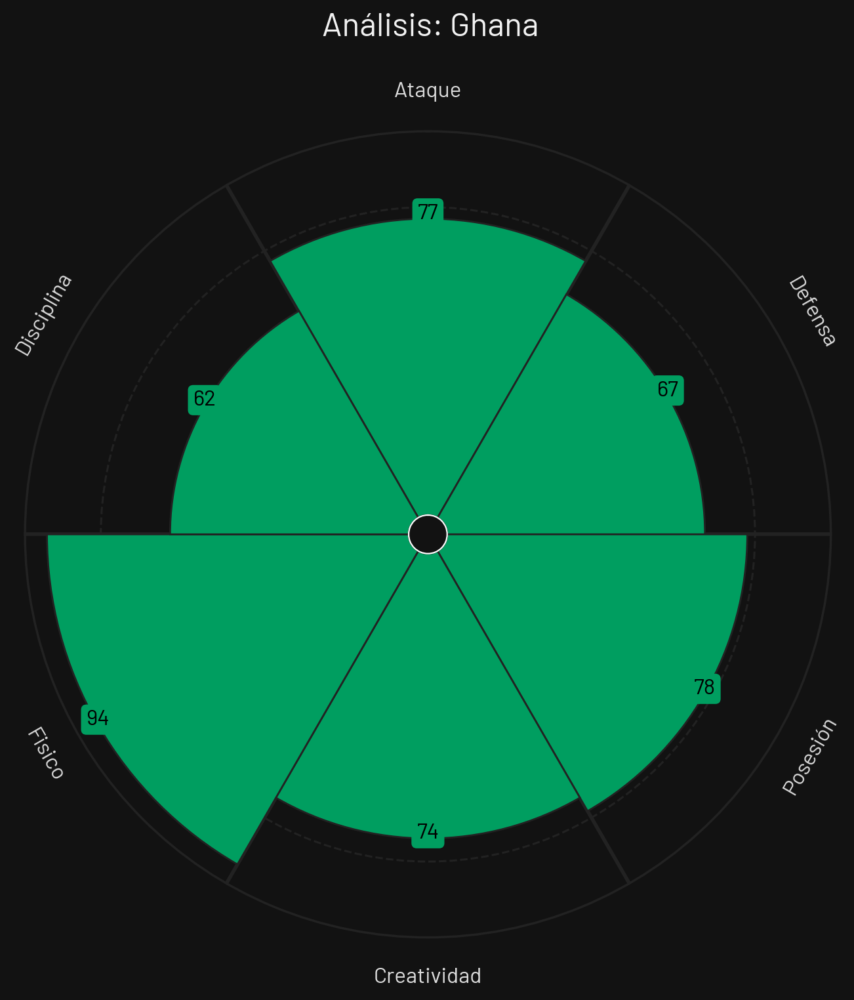
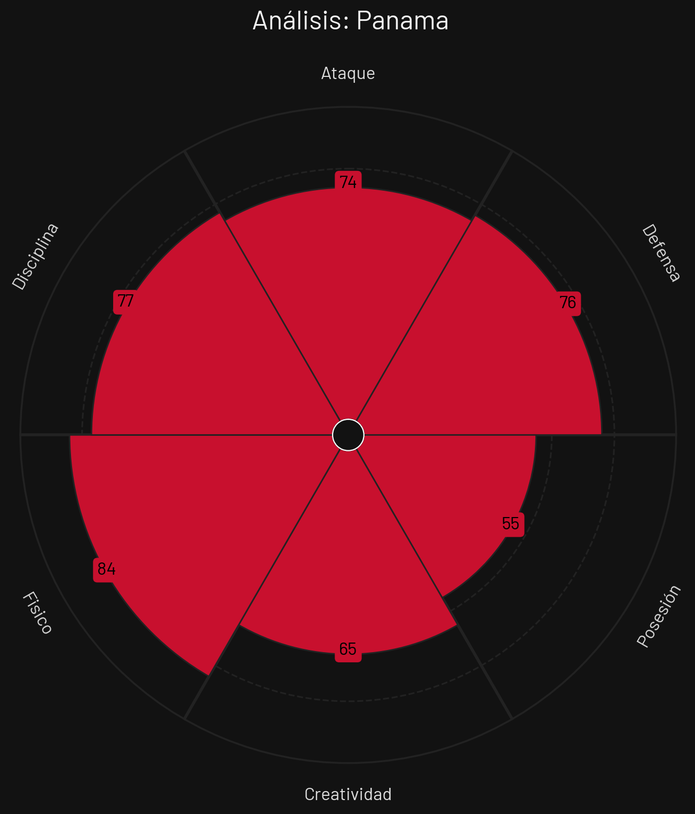

🏆 Tabla de Posiciones
| Pos | Equipo | PJ | G | E | P | GF | GC | DG | Pts |
|---|---|---|---|---|---|---|---|---|---|
| 1 |
 Inglaterra
Inglaterra
|
3 | 2 | 1 | 0 | 6 | 2 | 4 | 7 |
| 2 |
 Croacia
Croacia
|
3 | 2 | 0 | 1 | 5 | 5 | 0 | 6 |
| 3 |
 Ghana
Ghana
|
3 | 1 | 1 | 1 | 2 | 2 | 0 | 4 |
| 4 |
 Panamá
Panamá
|
3 | 0 | 0 | 3 | 0 | 4 | -4 | 0 |
Inglaterra

Estilo de Juego e Influencia
Posesión de control pausada, sobrecarga en zona intermedia con descenso de Kane y amplitud letal por extremos.
- Formación Base: 4-2-3-1 / 4-3-3
- xG Promedio: 2.15 por 90 min
- Zona de Presión: Bloque Alto (PPDA 8.0)
- Jugador Clave: Harry Kane
Croacia

Estilo de Juego e Influencia
Control absoluto del juego por su triángulo de mediocampistas, salida limpia bajo presión extrema y posesión paciente.
- Formación Base: 4-3-3
- xG Promedio: 1.65 por 90 min
- Zona de Presión: Bloque Medio-Alto (PPDA 9.2)
- Jugador Clave: Luka Modrić
Ghana

Estilo de Juego e Influencia
Transición ofensiva rápida impulsada por mediapuntas habilidosos, juego físico y repliegue rápido.
- Formación Base: 4-2-3-1
- xG Promedio: 1.35 por 90 min
- Zona de Presión: Bloque Medio (PPDA 10.2)
- Jugador Clave: Mohammed Kudus
Panamá

Estilo de Juego e Influencia
Bloque defensivo bajo disciplinado, repliegue ordenado y salida combinada por mediocentro organizador.
- Formación Base: 3-4-3 / 5-4-1
- xG Promedio: 1.05 por 90 min
- Zona de Presión: Bloque Bajo (PPDA 11.8)
- Jugador Clave: Adalberto Carrasquilla
Análisis Técnico: Grupo L - Mundial 2026
Basándome en los perfiles tácticos proporcionados, presento un análisis técnico detallado de los equipos del Grupo L:
📊 Comparativa General de Atributos
| Atributo | ||||
|---|---|---|---|---|
| Ataque | 91 | 78 | 77 | 74 |
| Defensa | 67 | 83 | 67 | 76 |
| Posesión | 97 | 91 | 78 | 55 |
| Creatividad | 75 | 82 | 74 | 65 |
| Físico | 83 | 80 | 94 | 84 |
| Disciplina | 81 | 69 | 62 | 77 |
🔍 Análisis por Equipo
INGLATERRA
Fortalezas
- Asociación de Kane (87): Inteligencia para bajar y distribuir juego.
- Poderío Ofensivo (84): Extremos desequilibrantes y gran pegada.
- Fuerza Aérea (82): Centrales y Kane dominan el balón parado.
Debilidades
- Transiciones Lentas (75): Lentitud en repliegue ante contras ultrasónicas.
Estrategia: Circular el esférico con calma, retrasar a Kane para arrastrar centrales y habilitar rupturas de extremos.
CROACIA
Fortalezas
- Mediocampo de Élite (88): Modrić y volantes controlan el juego.
- Salida Bajo Presión (84): Limpieza única en la entrega de balón.
- Experiencia (85): Gran manejo de los minutos finales del partido.
Debilidades
- Volumen Físico (72): Sufrimiento ante equipos de ritmo y transiciones físicas altas.
Estrategia: Mantener posesión defensiva lenta, desgastar al oponente y filtrar pases precisos a los extremos.
GHANA
Fortalezas
- Habilidad de Kudus (83): Desequilibrio individual y gran pegada.
- Duelos Físicos (80): Fuerte marca e intensidad en mediocampo.
- Velocidad en Transiciones (79): Contraataques veloces letales.
Debilidades
- Organización Defensiva (70): Tienden a descuidar las coberturas en el carril central.
Estrategia: Establecer bloque medio agresivo, robar mediante Kudus y enfilar directo en velocidad al contraataque.
PANAMÁ
Fortalezas
- Rigor de Repliegue (76): Defensa con línea de 5 disciplinada.
- Carrasquilla en Eje (77): Distribución rápida y limpia de balón.
- Compromiso Táctico (75): Trabajo coordinado en la marca posicional.
Debilidades
- Definición en el Área (62): Poca contundencia en las ocasiones generadas.
- Debilidad Aérea (64): Sufrimiento en centros altos cruzados.
Estrategia: Mantener las líneas replegadas tapando pasillos centrales y buscar transiciones rápidas dirigidas por Carrasquilla.
⚔️ Matchups Clave
🏆 Proyección del Grupo
Clasificación Esperada:
🧠 Análisis Táctico Avanzado
A continuación, se presenta un análisis técnico y cuantitativo del **Grupo L** para el Mundial de Fútbol 2026, evaluando las virtudes, debilidades y los enfoques estratégicos de cada selección a partir de sus perfiles estadísticos.
🔍 Análisis Perfil por Perfil
1. Panamá
Al examinar el archivo `PerfilTacticoPanama.png`, el conjunto canalero se planta en este torneo con una propuesta basada principalmente en el orden defensivo y el despliegue corporal, sacrificando la tenencia de la pelota.
- Fortaleza principal: Su excelente rendimiento en el plano de la potencia y resistencia (84 en Físico), bien complementado por una línea defensiva sumamente competitiva (76) y un gran sentido del orden colectivo (77 en Disciplina).
- Área de mejora: El control y la elaboración. Su registro de 55 en Posesión (el más bajo del grupo) y 65 en Creatividad delata serias dificultades para construir juego posicional, obligándolos a depender de un bloque bajo compacto y salidas directas.
2. Croacia
De acuerdo con los datos del archivo `PerfilTacticoCroacia.png`, la escuadra balcánica mantiene su esencia histórica: un mediocampo de época diseñado para adormecer al rival a través del pase y una última línea sumamente sólida.
- Fortaleza principal: Una soberbia fluidez asociativa (91 en Posesión) respaldada por la mayor inventiva del sector (82 en Creatividad) y una muralla posterior implacable (83 en Defensa).
- Área de mejora: La contención reglamentaria. Un registro de 69 en Disciplina indica que suelen recurrir con facilidad a las faltas tácticas o a desatenciones por protestas cuando los partidos se tornan demasiado trabados o intensos.
3. Ghana
El desglose analítico del archivo `PerfilTacticoGhana.png` posiciona al combinado africano como una escuadra con un potencial atlético devastador y una aceptable capacidad de circulación.
- Fortaleza principal: Un despliegue corporal e intensidad en las transiciones extraordinario (94 en Físico, el más alto del sector). Además, muestran registros bastante aseados en Posesión (78) y Ataque (77).
- Área de mejora: El equilibrio estructural y mental. Al registrar un endeble 67 en Defensa y un bajísimo 62 en Disciplina, se perfilan como un equipo propenso a cometer errores no forzados, descuidos en pelota parada o a sufrir amonestaciones rápidas.
4. Inglaterra
Al analizar el archivo `PerfilTacticoInglaterra.png`, los "Three Lions" se consolidan como el gran coloso estadístico y principal candidato del grupo, mostrando un fútbol total de control y pegada.
- Fortaleza principal: Un monopolio absoluto, casi tiránico, de la circulación del balón (97 en Posesión), potenciado por un arsenal ofensivo de élite mundial (91 en Ataque) y una sobria rectitud táctica (81 en Disciplina).
- Área de mejora: El repliegue defensivo. A pesar de su imponente ataque, conceden facilidades atrás con un regular 67 en Defensa, lo que sugiere problemas cuando se les salta la presión alta o se les ataca con balones a la espalda de sus centrales.
⚡ Dinámica Táctica del Grupo
La conformación del Grupo L vaticina partidos de un altísimo ritmo y choques conceptuales sumamente marcados: